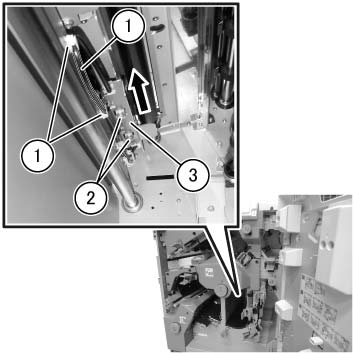
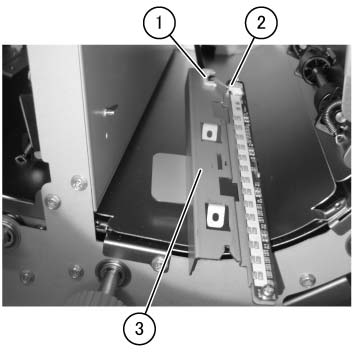
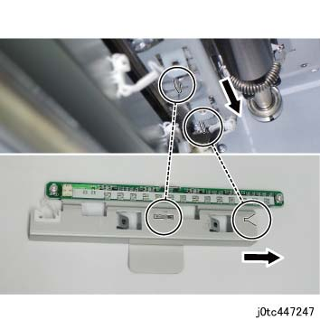

REP 47.14.8 CIS LED PWB 组件 (D2 仅) 
参考 PL:PL 47.14
Removal

执行IOT关机步骤. 确认电源已关闭并拔掉电源插头.
打开前盖板. (PL 47.1)
拆卸 CIS LED PWB 组件. (图 1)
释放 卡箍 (x2) 和 拆卸线束.
拆卸螺钉（x2）.
拉出 和 拆卸 CIS LED PWB 组件 in the 方向 的 arrow.

小心 拆卸时 as 连接器 is 仍然 connected.

(图 1) tcw447040
拆卸 CIS LED PWB 组件. (图 2)
释放 卡箍 和 拆卸线束.
拆卸 连接器.
拆卸 CIS LED PWB 组件.

(图 2) tcw447041
安装
安装时 the CIS LED PWB 组件, 对齐 protrusions 在...上 metal 板 到 notches 的 CIS LED PWB 组件 和 push it in the 方向 的 arrow. (图 3)

(图 3) tc447247
安装后 the CIS LED PWB 组件, peel 关闭/脱离 the protective mylar.
如果 CIS LED PWB 组件 已 replaced, 执行 the TCBM CIS Black 纸张 Handling 灯/光线 Intensity 调整. (ADJ 47.14.1)